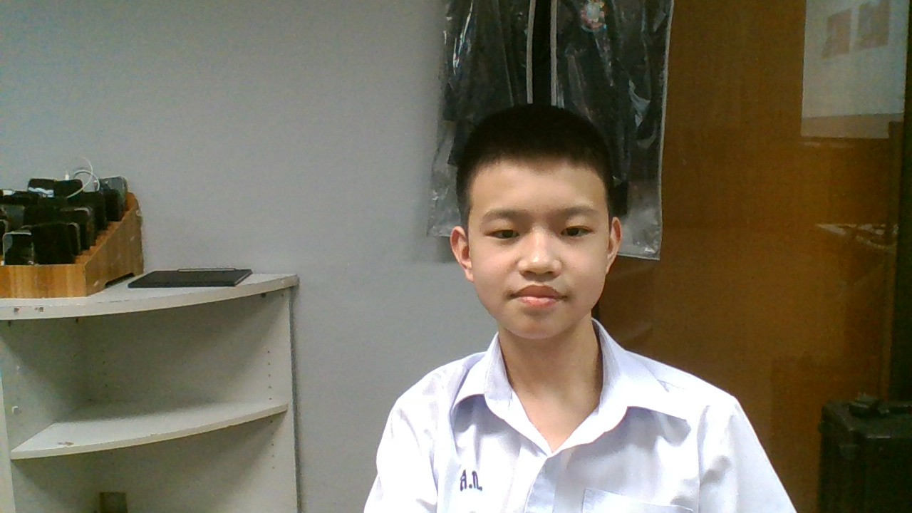

นางสาวสิริมณี อักขนิตย์ : ขอบคุณครูมิ้นท์ ที่เป็นที่ปรึกษาผม และสอนคณิตศาสตร์ผม
บทเพลงที่มอบให้ครู

นายสุวิทย์ งามผักแว่น : ขอบคุณครูวิทย์ ที่สอน IS ผมตอน ม.1 และทำให้ผมชอบแมวน้ำ
บทเพลงที่มอบให้ครู

นางสาวอุมาพร พิมพ์สุตะ : ขอบคุณครูอุ๊ ที่สอนภาษาไทยผม ทั้งตอนสอบเข้าสวนกุหลาบฯ และ ม.2
บทเพลงที่มอบให้ครู

นายธีรยุทธ มาณะจักร์ : ขอบคุณครูธี ที่สอนภาษาไทยผมตอน ม.1 ให้เข้าใจอย่างลึกซึ้ง และมีเจตคติที่ดีต่อการเรียนภาษาไทย
บทเพลงที่มอบให้ครู

นางสาววิยดา ไตรยวงค์ : ขอบคุณครูคุกกี้เค้ก ที่สอนเทคโนโลยีตอน ม.1 และวิชาเลือกเว็บไซต์ยุคดิจิทัลตอน ม.2 ให้เข้าใจง่าย
บทเพลงที่มอบให้ครู
สิทธิไชย เจริญปัญญาวุฒิ ม.207 เลขที่ 8
